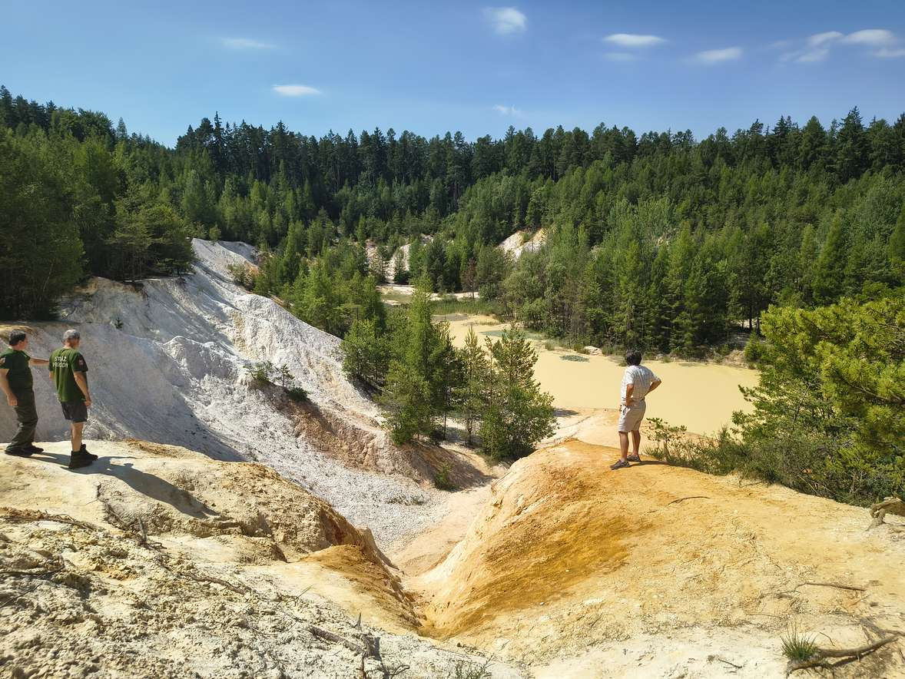
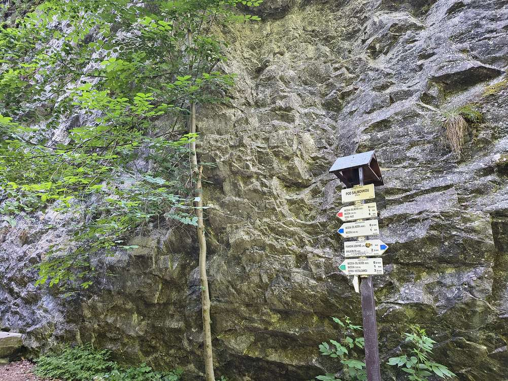

Jak ochránit Moravský kras a lesy kolem Brna, a přitom je lidem nezavřít? Odpověď hledá projekt Ochrana cenných ekosystémů a řízení udržitelné turistiky v okolí Brna, který dnes oficiálně představilo konsorcium vedené společností Atregia. Do konce roku 2028 vznikne první Plán udržitelného turismu pro CHKO Moravský kras a Školní lesní podnik Křtiny. Přibude také síť sčítačů návštěvnosti, nové vodní biotopy na Zaječím potoce a v Oboře Sokolnice i nové výletní cíle. Projekt s rozpočtem téměř 100 milionů korun je z 90 % financován z Programu švýcarsko-české spolupráce.
Chráněná krajinná oblast Moravský kras letos slaví 70 let od vyhlášení. Spolu s lesy Školního lesního podniku Křtiny Mendelovy univerzity tvoří souvislé území o rozloze zhruba 17 400 hektarů. Žije tu 136 druhů chráněných živočichů a 18 z nich je kriticky ohrožených. Návštěvnost je ale rozložená velmi nerovnoměrně. Skalní mlýn, Punkevní jeskyně, propast Macocha nebo Kateřinská jeskyně čelí velkému náporu, zatímco jiná místa zůstávají stranou zájmu. Dosud přitom chybí systematický monitoring návštěvnosti i společná strategie, jak ji šetrně usměrňovat.
„Nechceme lidem říkat, kam nesmí. Chceme jim nabídnout alternativní cíle. Abychom to ale mohli dělat dobře, potřebujeme nejdřív přesně vědět, kolik lidí kam chodí a co to s krajinou dělá.“
Jedním z výstupů projektu je Plán udržitelného turismu pro CHKO Moravský kras a ŠLP Křtiny, jehož finální podoba má být hotová v prosinci 2027. Vzniká ve spolupráci se Správou CHKO Moravský kras, DMO Moravský kras a okolí a dalšími místními partnery. Podkladem bude také nový monitoring návštěvnosti: v území přibude pět sčítačů, stávající přístroje se zmodernizují a vývoj návštěvnosti bude možné sledovat na veřejném webovém rozhraní. Zkušenosti s řízením turismu v chráněných územích přináší švýcarský partner, výzkumný ústav WSL (Swiss Federal Institute for Forest, Snow and Landscape Research).
Součástí projektu je také rozvoj návštěvnického a vzdělávacího zázemí na pozemcích ŠLP Křtiny. V Arboretu Křtiny, které letos slaví sto let, vznikne vzdělávací zóna Vrbiště–bludiště s altánem určeným pro výuku v terénu. Ve Stoletém háji vznikne nové odpočívadlo a obnoví se zázemí lesní pedagogiky v areálu Doubravka. Celkem projekt doplní nejméně 33 prvků návštěvnické infrastruktury, mezi nimi altány, piknikové sety, naučné tabule a sedm kompostovacích toalet.
Na některých místech se přitom návštěvnickému tlaku nelze zcela vyhnout. Projekt se proto zaměřuje také na cílenou obnovu cenných biotopů a vytváření vhodných podmínek pro chráněné druhy.
„Kvalitní a dobře fungující biotopy poskytují organismům lepší podmínky pro život a zvyšují jejich odolnost vůči různým rušivým vlivům, mezi které může patřit také návštěvnický tlak. Nestačí proto pouze usměrňovat pohyb návštěvníků, ale je potřeba současně pečovat o prostředí, v němž citlivé druhy žijí.“
„Na Zaječím potoce a v Oboře Sokolnice obnovujeme vodní biotopy a vytváříme vhodné podmínky pro obojživelníky a další organismy vázané na vodní prostředí. V Arboretu Křtiny a v areálu lesní pedagogiky Doubravka zase rozšiřujeme možnosti, jak mohou lidé přírodu poznávat a lépe jí porozumět.“
Dvě demonstrační opatření ukážou, jak lze obnovovat vodní biotopy a zlepšovat podmínky pro druhy vázané na vodní prostředí. Na Zaječím potoce v Brně se obnoví tři zanesené rybníky a jedna stávající tůň. Současně vzniknou čtyři nové tůně a sedimentační mokřad, takže se počet vodních ploch zvýší ze čtyř na devět. Biologické průzkumy zde potvrdily výskyt sedmi druhů obojživelníků a přibližně deseti druhů netopýrů. Obnova lokality přispěje k zadržování vody v krajině a zlepší podmínky pro rozmnožování obojživelníků i získávání potravy netopýrů.
V Oboře Sokolnice vznikne nová vodní nádrž a dvě tůně, které podpoří zadržování vody v krajině a vytvoří vhodné prostředí pro obojživelníky a další druhy vázané na vodu. Práce na obou lokalitách budou probíhat od září 2026 do března 2028. Cílem projektu je zvýšit početnost populací vybraných chráněných druhů na těchto lokalitách alespoň o 30 %.
Součástí projektu je také osvěta, vzdělávání a sdílení zkušeností. Uskuteční se nejméně 13 akcí pro veřejnost. Výuka na Mendelově univerzitě v Brně bude rozšířena o přednášku věnovanou řízení návštěvnosti, dopadům nadměrného turismu a možnostem jeho regulace v chráněných územích. Studenti se budou moci zapojit také prakticky: během tří celodenních setkání s dobrovolnou stráží přírody CHKO Moravský kras si na vlastní kůži vyzkoušejí práci strážce přírody, včetně komunikace s návštěvníky a prevence negativních dopadů turismu. Projekt nabídne rovněž tři témata bakalářských a diplomových prací a jeho výsledky budou představovány na odborných konferencích zaměřených na udržitelný turismus.
Projekt Ochrana cenných ekosystémů a řízení udržitelné turistiky v okolí Brna probíhá od 1. 6. 2026 do 31. 12. 2028. Celkový rozpočet je 99 730 670 Kč, z toho grant činí 89 757 603 Kč. Realizátorem je Atregia s.r.o. ve spolupráci s Mendelovou univerzitou v Brně, ASITIS s.r.o., KAVYL, spol. s r.o. a švýcarským partnerem WSL. Projekt podporují AOPK ČR, statutární město Brno, DMO Moravský kras a okolí a Spolek pro rozvoj venkova Moravský kras.
Podpořeno švýcarským příspěvkem na snižování hospodářských a sociálních rozdílů v EU.

Přečtěte si, jaké cíle projekt sleduje, kdo se na něm podílí a co se v jednotlivých lokalitách chystá.